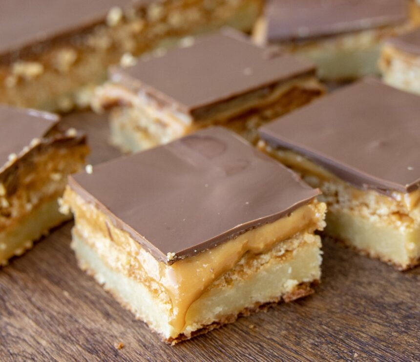

Twix Kage
Her er en opskrift på en twix kage

Ingridientser.
Kagebund
- 200 g. hvid chokolade
- 200 g. smør
- 250 g. sukker
- 3 tsk. vaniljesukker
- 125 g. hvedemel
- 3 stk. æg
Kikselag
- 180 g. digestivekiks
- 90 g smør
Karamellag
Cokoladetop
- 200 g. mørk chokolade
- 2 tsk. kokosolie
Fremgangsmåde.
kagebund
- Tænd ovnen på 175 grader varmluft.
- Smelt smørret i en gryde ved lav varme. Hak chokolade groft. Tag gryden af varmen, når smørret er smeltet og tilsæt chokoladen. Pisk det godt sammen. Det kan godt skille en lille smule (det har den hvide chokolade tendens til).
- Pisk æg, sukker, hvedemel og vaniljesukker sammen til en luftig masse med en elpisker eller i en røremaskine.
Tilsæt den afkølede blanding af smør og chokolade, imens der piskes.
Fordel dejen i en form (16 gange 28 cm), som er smurt med smør eller foret med bagepapir.
Bag kagen i midten af ovnen i ca. 25 til 30 minutter. Tag den ud af ovnen og lad den køle helt af. Den må gerne virke lidt ubagt, når du trykker på den med fingrene.
Lad bunden køle af inden kikselaget hældes på.
Kikselag
Smelt smøret i mikroovnen eller i en lille gryde.
Knus digestivekiks. Vi kørte dem i en foodprocesser, men du kan også sagtens komme dem i en frysepose og bruge en kagerulle til at knuse dem.
Bland smøret og de knuste kiks sammen og kom det på kagebunden. Du må gerne presse det lidt ud, så du får et fint jævnt lag.
karamellag
Rør godt rundt i karamellen og fordel den over kikselaget, så den dækker alt kiks.
chokoladetop
Hak chokolade groft.
Smelt chokoladen og kokosolien sammen i mikroovnen.
Hæld den smeltede chokolade over karamellen, så den dækker det hele.
Sæt twix kagen på køl til den har sat sig. Gerne i 3-4 timer eller natten over.
For at komme til bage så tryk på profil">profil